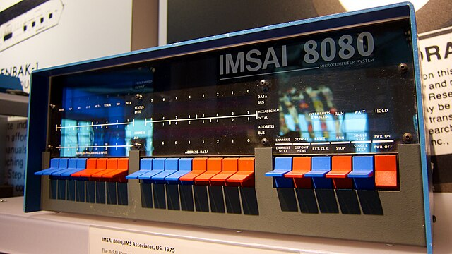
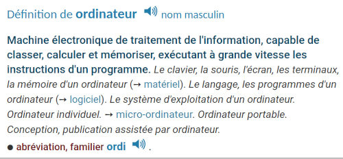
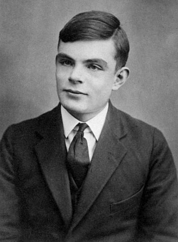
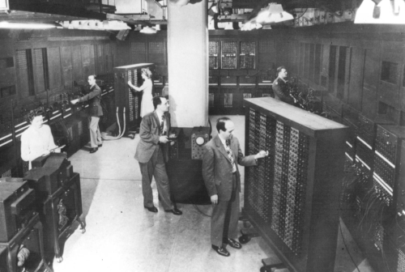
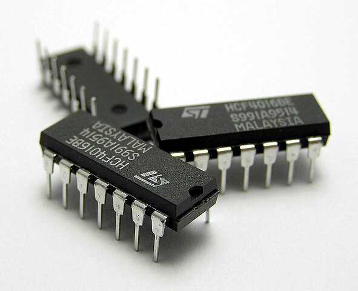
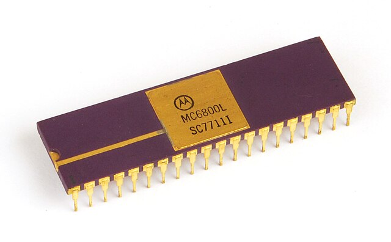
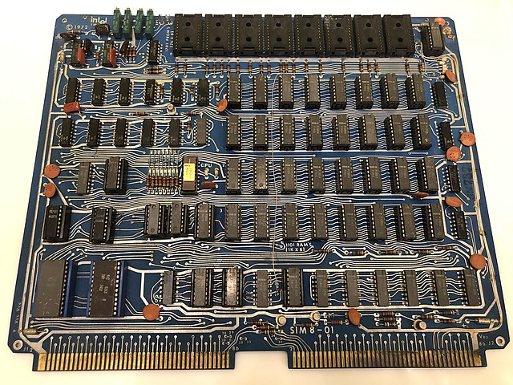
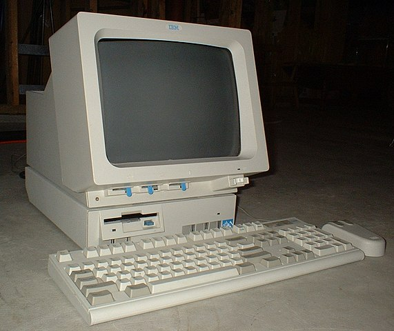

C2-HIST-02 : Histoire de l’informatique : le matériel
Contents

C2-HIST-02 : Histoire de l’informatique : le matériel#
Objectifs pédagogiques#
connaître les principales étapes entre le Zuse 1 et le Smartphone
tubes à vide
transistors
circuits intégrés
savoir placer quelques noms célèbres dans cette histoire
connaître les différentes métriques utilisées pour classer la performance d’un ordinateur
Définition : un ordinateur#
Selon le petit robert :

Si on résume …#
Machine plus rapide que l’être humain
Machine électronique
Traitement de l’information
Programmes enregistrés
La machine exécute des instructions
Dans la Préhistoire de l’informatique nous en étions resté aux “computers” humains : les personnes - pour la plupart des femmes - qui travaillaient sur des machines à calculer mécaniques.
Alan Turing et sa machine théorique#

Alan Turing est un mathématicien anglais né en 1912. Il propose en 1936 le premier concept d’un ordinateur moderne. Cette machine est dans son esprit une expérience de pensée : une méthode qui permet de résoudre un problème en utilisant uniquement la seule puissance de l’imagination du cerveau humain.
Sa machine est :
constituée d’un rouleau de papier de longueur infinie divisé en cases. Chaque case peut contenir un symbole d’un alphabet fini donné (par exemple 0 et 1)
une tête de lecture/écriture capable de lire ou d’écrire sur une case à la fois
un registre d’état qui mémorise l’état courant de la machine
une table d’actions qui permet à la machine de faire avancer, reculer, lire ou écrire la tête de lecture.
Il peut être démontré en informatique théorique que n’importe quel algorithme décrivant un problème peut être résolu avec une machine de Turing.
On dit d’un système (une machine, un langage de programmation, etc..) qui est équivalent en terme de calcul à une machine de Turing qu’il est Turing-complet.
Des constructrices et constructeurs ont construits des machines physiques qui s’approchent d’une machine de Turing. Ces machines n’en sont pas puisqu’elles n’ont pas de ruban de longueur infinie

1937 : Plus rapide que l’être humain#
La première machine mécanique (non Turing-complet) est un ordinateur allemand
La Zuse Z1#
Konrad Zuse (1915-1995), ingénieur allemand est considéré parmi les premiers constructeurs de machines qui peuvent s’appeler ordinateur.
En 1937, il construit une première machine programmable et entièrement mécanique : la Z1

Caractéristiques :
mécanique
1 tonne
vitesse :
1 Hztemps d’une addition : 3 secondes
La Zuse Z3#
La machine Z1 n’étant pas très fiable quoique de bonne facture, il entame la construction de la Z3, une machine électro-mécanique et programmable
Elle est construite à partir de relais électromagnétiques (relais téléphoniques) :


Caractéristiques :
électro-mécanique
Turing-complet
binaire et capable de calcul en virgule flottante
construite à l’aide de relais téléphoniques (2600)
programmes écrits sur une bande perforée
vitesse :
5 Hz1 tonne
Mémoire : 64 mots mémoire de 22 bits
Puissance électrique nécessaire :
4 KW
1944 : Machine automatique#
Les machines Z1 et ses successeur (Z3 et suivantes) nécessitaient toutes l’intervention d’un humain pour pouvoir calculer. La toute première machines entièrement automatique est arrivée pendant la guerre. Elle permettait de calculer des trajectoires balistiques.
Harvard Mark 1 (IBM ASCC)#
Le Harvard Mark 1 (ou IBM ASCC pour Automatic Sequence Controlled Calculator) a été développé par un ingénieur d’IBM et envoyé à l’université de Harvard.

Caractéristiques :
765’000 composants électro-magnétiques
Mémoire : 72 mots mémoire de 23 chiffres
Vitesse :
3 Hztemps pour :
multiplication :
7 secondesaddition/soustraction :
1/3 secondesdivision :
15.3 secondes
4 tonnes
Puissance électrique nécessaire :
3.7 KW
1946 : Machine électronique (tubes à vide)#
Les relais ont progressivemenet été remplacé avec l’arrivée de tubes à vide fiables. Un tube à vide est un composant électronique. Il ne comprend pas d’élément mécanique comme les relais mais peut fournir le même comportement électrique.

ENIAC#
En 1946, c’est la fin de la seconde guerre mondiale. Cette guerre a permis de gigantesques progrès technologiques, y compris sur le plan de l’informatique. C’est à cette date que la première machine totalement électronique voit le jour aux USA. C’est l’ENIAC (Electronic Numerical Integrator and Computer).

Caractéristiques:
machine décimale (pas binaire !)
vitesse :
5 KHztemps pour :
multiplication :
2.8 millisecondesaddition :
200 microsecondesdivision ou racine carrée :
28,6 millisecondes
Puissance électrique nécessaire : inconnue
1948 : Les programmes enregistrés#
Jusqu’à cette date, l’entier des programmes des ordinateurs étaient stockés sur des cartes perforées, sur des rubans ou sur des mechanismes mécaniques. La grande révolution a été de pouvoir stocker les programmes sous forme électronique, c’est-à-dire de les charger dans une mémoire vive.
La mémoire électronique est basée sur les tubes de Williams. C’est une technologie proche des tubes à vide.

Manchester Mark 1#
L’Université de Manchester est l’un des pionniers du monde académique pour le développement de l’informatique civile. C’est dans cette université qu’a été construit le premier ordinateur muni d’une mémoire vive : le Manchester Mark 1.

Caractéristiques :
machine binaire
travaille en virgule flottante
vitesse :
multiplication :
2.1 millisecondesaddition :
1.59 microsecondes
une entreprise privée a racheté le Manchester Mark 1 et l’a commercialisé sous la marque Ferranti Mark 1 en 1951 le faisant le premier ordinateur programmable commercial.
puissance électrique nécessaire :
25 KW
1948 : En Suisse#
Si le Manchester Mark 1 a été le premier ordinateur de l’histoire qui coche toutes les cases de la définition, d’autres pays se sont attelé à construire des machines. C’est aussi le cas de la Suisse avec l’ETH Zürich.
ERMETH#
Entre 1948 et 1956, l’école polytechnique fédérale de Zürich a construit et exploité une machine 100 % suisse : l’ERMETH (pour Elektronische Rechenmaschine der ETH). C’est un des tout premier ordinateurs du monde a disposer d’un disque dur pour stocker de l’information une fois la machine mise hors service.

Caractéristiques :
disque dur de 1.5 tonnes (10 Kilo mots de 16 chiffres)
1500 tubes électroniques
vitesse : inconnue
Puissance électrique nécessaire : inconnue
La machine peut être vue au Museum für Kommunikation (Bern)
1954 : Premier succès commercial#
C’est en 1951 que, pour la première fois de l’histoire, une entreprise commercialise un ordinateur. Mais cette tentative fut un échec. Il a fallu attendre trois ans pour que cette commercialisation devienne un succès. C’est l’entreprise américaine International Business Machines (IBM qui réussi a vendre le temps de calcul de 19 ordinateurs.
IBM 701#

Caractéristiques :
Prix : 12000 dollars américains (en 1954 !) pour un mois de location (avec les ingénieurs)
9.3 tonnes
Mémoire de 73 Kb.
vitesse : inconnue
Consommation électrique nécessaire : inconnue
1953 : Des tubes à vide aux transistors#
Le transistor est un composant électronique miniature semi-conducteur. Son invention remonte à des concepts inventés dans les années 1920. Le premier brevet déposé l’a été en 1948 par trois chercheurs des laboratoires Bell (aujourd’hui Nokia Bell labs: Shockley, Brattain et Bardeen. Le premier transistor fonctionnel est sorti des laboratoires Bell en 1947. Quelques années plus tard il est commercialisé. Infiniment plus stable, beaucoup plus petit, et surtout bien plus économe en énergie, il supplentera les tubes à vide dans presque toute l’électronique mondiale. Il existe encore un marché de niche dans la musique à très haute définition pour des raisons de qualité.

1953 : University of Manchester ETC#
Le premier ordinateur à transistor a été construit par l’Université de Manchester, c’est l’Experimental Transistor Computer (ECT). l’ECT était le prototype, la version taille complète est achevée en 1955 et conservera le même nom.

Caractéristiques :
mots mémoire à 48 bits
1300 transistors
250 ponts
puissance électrique nécessaire :
150 watts(!!)
1958 : Des transistors aux circuits intégrés#
En 1958, Jack Kilby, physicien travaillant pour Texas Instrument eu l’idée de câbler plusieurs transistors ensembles et de les couler dans un boîtier. Cela a permis de miniaturiser l’électronique et de rassembler les composants ensembles en couches plus larges (les portes logiques). Le brevet est déposé en 1964. Jack Kilby recevra le Prix Nobel en 2000 pour cette invention.

Missiles et missions Apollo#
On sait que les deux technologies sont intimement liées. L’ordinateur de bord des missiles ballistiques intercontinentaux Minuteman fut le premier ordinateur a être construit autour de circuits intégrés. De même que l’ordinateur de bord des missions Apollo le Apollo Guidance Computer (AGC) fut construit avec des circuits intégrés.

Margaret Hamilton et le code complet de l’AGC

Buzz Aldrin avec l’AGC en cours de Trans lunar injection (TLI)
1971 : Le premier micro-processeur#
Tous les composants électroniques d’un microprocesseur ne pouvaient tenir sur un seul circuit intégré.
Intel 4004#
C’est l’entreprise américaine Intel Corp. qui fut la première à réussir à intégrer l’ensemble des composants électroniques d’un processeur sur un seul circuit intégré, le 4004 :
ALU
registres
FPU
etc..

Cette miniaturisation a permis notamment d’augmenter la vitesse de calcul, réduire les coûts de fabrication, augmenter la fiabilité et surtout réduire la consommation électrique.
Caractéristiques :
4 bits
horloge : 740
KHzgravure 10 microns
92’000 instructions par seconde
accède à 4KB de mémoire de programme
adresse 640 B de RAM
1974 Motorola 6800#
Au Japon, l’entreprise motorola possède aussi une section de R&D importante. C’est de cette entreprise qu’en 1974 sort le Motorola 6800, un microprocesseur à 8 bits qui équipera nombre de micro-ordinateurs grand public.

Années 1970 : les micro-ordinateurs#
Les premiers ordinateurs dont le prix était accessible au grand public sont arrivés dans les années 1970. Ils étaient basés soit sur des microprocesseurs Intel, soit Motorola. Ces deux entreprises sont les leaders pour les 30 prochaines années. Ces premiers micro-ordinateurs étaient vendus en kit : il fallait les construire soi-même ou les commander montés (ce qui augmentait le prix).
1972 Intel Sim-8-01#

1976 Motorola MEK6800-D2#

1976 Apple 1#

1980 - aujourd’hui : les ordinateurs de maison#
La technologie des microprocesseurs a évidemment évolué. Des instructions nouvelles permettant des traitement de données de plus en plus complexes sont apparus au fil des années. L’architecture entre les premiers micro-ordinateurs et ceux d’aujourd’hui n’a pas fondamentalement changé.
1982 : Commodore 64#

1984 : Apple Macintosh#

1991 : IBM PS/1#

1981 : Osborne 1 : le premier transportable#

1985 : Toshiba T1100 : le premier portable#

1991 : Apple Powerbook#

Aujourd’hui : les smartphones#
La miniaturisation de tous les composants des ordinateurs a amené la possibilité de positionner l’entier des composants d’un ordinateur (la souris, l’écran, le clavier, le processeur, la mémoire et l’énergie) dans un espace qui tiendrait dans une poche.
C’est une sorte de disparition programmée.
2008 : Apple Iphone#
Comparaison de performances#
Il est d’usage de mesurer la performance d’un ordinateur au nombre d’opérations en virgule flottante qu’il peut effectuer en une seconde. On appelle cette métrique le FLOPS (Floating Point Operations per Second).
Le graphique suivant commence en 1993, date à laquelle a été introduit le tout premier ranking mondial top500 qui liste les 500 ordinateurs les plus rapides (et donc puissants) de la planète. En parallèle, la performance du plus rapide des ordinateurs de gamer à la même date est indiqué tout comme la puissance du smartphone le plus rapide.

On remarque qu’il faut 19 années pour trouver la performance du super-calculateur le plus rapide de la planète dans son salon. En attendant 9 années supplémentaires, cette même performance se trouve dans notre poche.